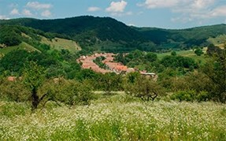
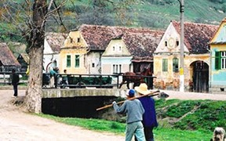
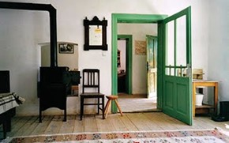

Mălâncrav


The village is very well preserved due to its isolation, set far away from any town 13 kilometres down a country road, which eventually leads into the hills and forests. It is a perfect starting point to discover other secluded villages with fortified churches. Mălâncrav has the highest proportion of remaining Saxons in any village in Transylvania. The Lutheran church has rare 15th century frescoes and the oldest entire altarpiece (1520) still in original location in Transylvania. Close to the church is a hitherto abandoned Hungarian princely Manor House, beautifully restored by the MET. Adjacent to the Manor is an ancient orchard - now organic - also managed by the Trust. There are three small shops in the village selling basic food.


The House:276 Mălâncrav - sleeps 5 + 1 child under 8. It consists of two houses set together in courtyard, with a stable and barn leading into an orchard. Two large rooms in first house plus shower and WC (sleeps three). In second house one room (sleeps two) connecting to a basically equipped kitchen, and a dining room with a wood-burning stove. Outdoor summer kitchen. There are an additional 4 guesthouses in Mălâncrav as well as the beautiful Apafi Manor. The Journey: Drive from Bucharest to Brasov, and through Sighisoara towards Medias. Turn left at Laslea. First left in Laslea and then branch right to Mălâncrav.
For more details and rates Click here